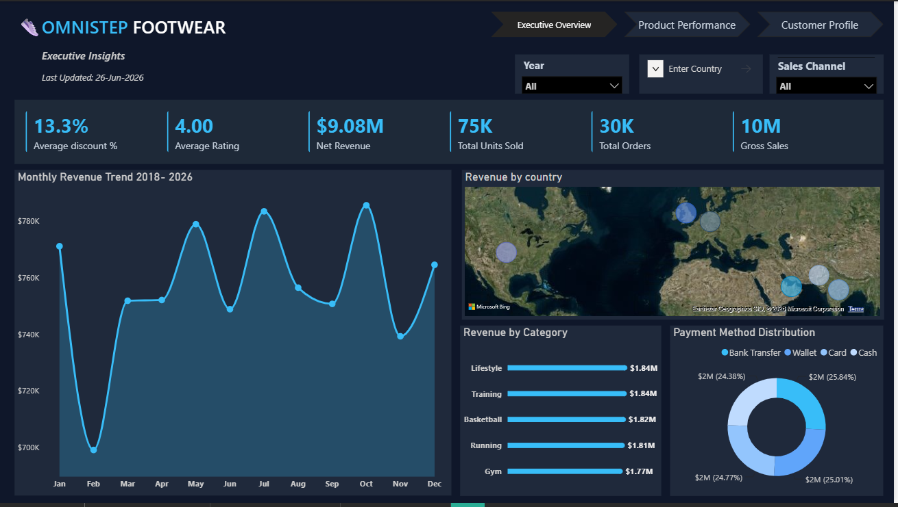
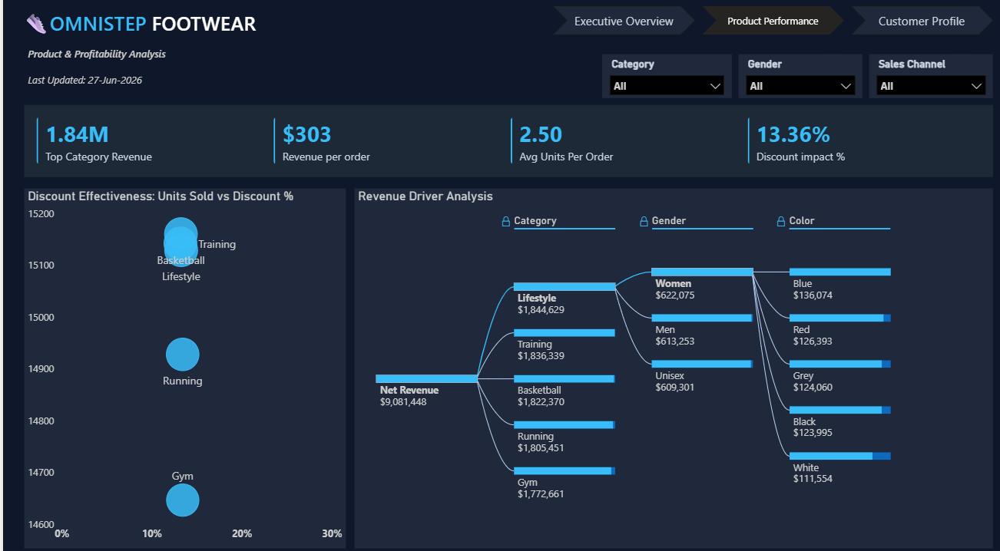
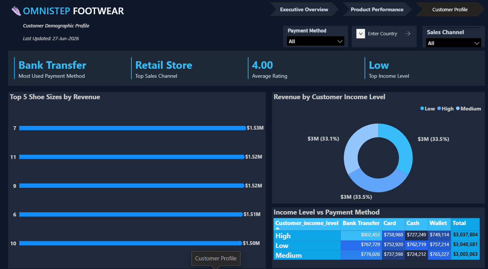

This project involved developing an interactive Power BI dashboard for Omnistep Footwear, a retail footwear company seeking to improve sales reporting and business decision-making. The solution transformed raw sales data into actionable insights using Power Query, Star Schema data modelling, and DAX measures. The dashboard enables stakeholders to monitor key performance indicators, evaluate product performance, understand customer behaviour, and identify revenue opportunities through interactive visualizations.
Primary Tool
Dashboard Pages
KPIs Created
Business Questions Answered
As Omnistep Footwear expanded its operations across multiple countries, products, and customer segments, management needed a faster and more effective way to monitor business performance. Manual analysis of large sales datasets made it difficult to identify trends, evaluate product performance, understand customer purchasing behaviour, and make timely strategic decisions. The objective of this project was to develop an interactive Power BI dashboard that transforms sales data into meaningful business insights for informed decision-making.
Raw Dataset
⬇️
Power Query
⬇️
Data Cleaning
⬇️
Star Schema
⬇️
DAX Measures
⬇️
Interactive Dashboard

Provides a high-level summary of revenue, orders, units sold, average discount, customer ratings, country performance, and payment methods.

Analyzes product categories, discounts, sales channels, and product performance to understand what drives revenue.

Examines customer demographics, income levels, preferred payment methods, and top-performing shoe sizes.
The Power BI solution transformed raw sales data into an interactive business intelligence dashboard, enabling stakeholders to monitor KPIs, evaluate product performance, understand customer behaviour, and make informed business decisions. The dashboard provides a centralized reporting solution that supports strategic planning, inventory optimization, and continuous business performance monitoring.